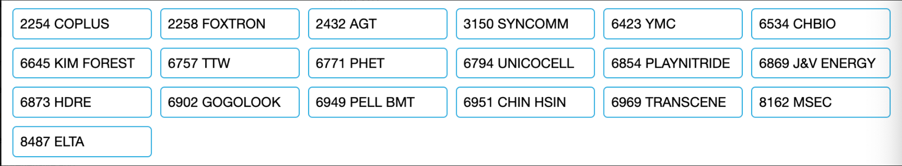

ChatGPT
一、ChatGPT 具有的功能
1、OCR 识别
关键词scan,ocr, return a list
案例：
scan the picture and print out the text in lists, for example:2254 COPLUS

Chatgpt:
Here is the extracted list of companies from the image:
- 2254 COPLUS
- 2258 FOXTRON
- 2432 AGT
- 3150 SYNCOMM
- 6423 YMC
- 6534 CHBIO
- 6645 KIM FOREST
- 6757 TTW
- 6771 PHET
- 6794 UNICOCELL
- 6854 PLAYNITRIDE
- 6869 J&V ENERGY
- 6873 HDRE
- 6902 GOGOLOOK
- 6949 PELL BMT
- 6951 CHIN HSIN
- 6969 TRANSCENE
- 8162 MSEC
- 8487 ELTA
2、利用智能判断，做一个翻译机器人
翻译机器人 Prompt：
3、用循环功能做一个行业研究机器人
应用场景：100 个上市公司需要研究其主营业务，市值，员工等，如果一个个查询，难免效率低。这很适合机器人去做。
4、做一个表格，提供表头和维度
先让 chatgpt 生成 markdown 格式表达，把表达复制到 Typora 之后，再从 Typora 复制，粘贴到 Excel 进行进一步完善。
5、翻译外文书籍
推荐 pdf 英文文档，用谷歌浏览器插件沉浸翻译+ 自定义 OpenAI API 来完成。
如果是 epub，也可以用这个完成，翻译效果比 github 上有个大神写的软件还要好一些。
二、ChatGPT 各个端的区别
20241029 更新：
在 Web 端现在也自带搜索功能了，这个以前只有 IOS 端和桌面端有。
所以，要不断关注。
三、用 ChatGPT 写财务分析报告
Prompt
我正在编写一份公司的财务分析报告，需对2024年前9个月财务报表数据进行分析并撰写对应文字描述。请根据以下步骤完成报告：
根据财务数据表格中金额的占比进行排序，从高到低排列项目。
按照排序结果，套用2024年上半年财务分析模板，
将报告中的时间和数字替换为表格中的最新数据。 确保每个项目的描述和数据保持对齐，不要发生错位。
请按上述顺序和要求撰写最终的财务分析报告。
以下是模板：
截至2024年6月30日，公司总资产10,504.92万元，其中，流动资产占比86.5%，非流动资产占比13.5%。 截至2024年6月30日，总资产中占比最大的几项资产包括存货、预付账款、应收帐款、货币资金，其中存货（剔除折旧后净值）3828.58万元，占总资产的36.6%；预付账款 2249.72 万元，占总资产的21.5%；应收帐款净额为 1903.13 万元，占总资产的18.2%；货币资金 898.89万元，占总资产的8.6%。 截至2024年6月30日，公司负债合计 10,948.37万元，其中主要为短期借款、应付账款和应付职工薪酬，分别为 7507.60万元、1372.15万元、746.25万元。其中 2024 年上半年新增短期借款3228.18 万元（为银行贷款，以及去年已贷款项产生的利息）。
以下是 2024 年前 9 个月的项目及金额：
| 科目 | 2024/9/30 | 2024年前九个月占比 |
|---|---|---|
| 货币资金 | 2181.23 | 24.1% |
| 交易性金融资产 | ||
| 应收票据 | ||
| 应收账款净额 | 1512.42 | 16.7% |
| 预付款项 | 108.56 | 1.2% |
| 应收利息 | ||
| 其他应收款净额 | 116.27 | 1.3% |
| 存货净额 | 3523.45 | 39.0% |
| 其他流动资产 | 370.96 | 4.1% |
| 流动资产合计 | 7812.89 | 86.5% |
| 长期股权投资净额 | ||
| 投资性房地产净额 | ||
| 固定资产净额 | 447.38 | 5.0% |
| 在建工程净额 | ||
| 使用权资产净额 | 333.17 | 3.7% |
| 无形资产净额 | 400.82 | 4.4% |
| 商誉 | ||
| 长期待摊费用 | 7.80 | |
| 递延所得税资产 | 30.63 | |
| 其他非流动资产 | ||
| 非流动资产合计 | 1219.80 | 13.5% |
| 资产合计 | 9032.70 | |
| 短期借款 | 7406.69 | 58.5% |
| 应付账款 | 802.67 | 6.3% |
| 预收款项 | ||
| 合同负债 | 2359.97 | 18.7% |
| 应付职工薪酬 | 935.57 | 7.4% |
| 应交税费 | 211.63 | 1.7% |
| 应付利息 | ||
| 其他应付款 | ||
| 一年内到期的非流动负债 | ||
| 其他流动负债 | 1.42 | 0.0% |
| 流动负债合计 | 11717.95 | 92.6% |
| 长期借款 | 500.00 | |
| 租赁负债 | 329.04 | 2.6% |
| 长期应付款 | ||
| 预计负债 | ||
| 递延收益 | 105 | |
| 非流动负债合计 | 934.04 | 7.4% |
| 负债合计 | 12,651.99 | |
| 实收资本(或股本) | 5969.15 | |
| 资本公积 | 42236.47 | |
| 其他综合收益 | -4.54 | |
| 未分配利润 | -51820.38 | |
| 少数股东权益 | ||
| 股东权益合计 | -3,619.30 | |
| 负债及股东权益合计 | 9,032.70 |
四、如何用好 SearchGPT¶
通用用法：
as a [role], do something;
Iterative Refinement 很有用，elaborate on sth.
提供参考源：provide sources for further reading.
To maximize your efficiency with OpenAI's SearchGPT, consider the following advanced strategies:
1. Craft Precise and Detailed Prompts - Be Specific: Clearly articulate your query to guide SearchGPT effectively. - Example: Instead of "Explain machine learning," use "Provide an overview of supervised learning techniques in machine learning." - Set Context: Define the role or perspective you want SearchGPT to assume. - Example: "As a financial analyst, summarize the latest trends in renewable energy investments."
2. Utilize Advanced Prompt Engineering Techniques - Role Assignment: Instruct SearchGPT to act as a specific expert. - Example: "Act as a cybersecurity expert and explain the implications of the latest data breach." - Step-by-Step Guidance: Request detailed, sequential explanations for complex topics. - Example: "Break down the process of setting up a virtual private network (VPN) step by step." - Iterative Refinement: Engage in follow-up questions to delve deeper into subjects. - Example: After receiving an initial response, ask, "Can you elaborate on the security protocols involved in VPNs?"
3. Leverage SearchGPT's Web Browsing Capabilities - Access Real-Time Information: Use SearchGPT to retrieve up-to-date data, such as current events or market trends. - Example: "Provide the latest stock prices for major tech companies." - Verify Sources: Request citations or source links to ensure the credibility of the information provided. - Example: "Summarize recent advancements in AI research and provide sources for further reading."
4. Employ Data Analysis Features - Upload and Analyze Data: Utilize SearchGPT's capability to process and interpret datasets. - Example: "Analyze the attached sales data and identify quarterly trends." - Generate Visualizations: Request charts or graphs to visualize data insights. - Example: "Create a bar chart comparing monthly revenue for the past year."
5. Engage with Voice Mode for Natural Interactions - Activate Voice Conversations: Use the voice mode to have spoken dialogues with SearchGPT, enhancing the conversational experience. - Example: "Explain the concept of blockchain technology in simple terms." - Real-Time Language Translation: Leverage voice mode for immediate translation between languages. - Example: "Translate the following English sentence into Spanish: 'What are the benefits of renewable energy?'"
6. Maintain Security and Privacy - Avoid Sharing Sensitive Information: Refrain from inputting personal or confidential data to protect your privacy. - Verify Information: Cross-check critical information from multiple sources to ensure accuracy.
By implementing these strategies, you can effectively harness the full potential of OpenAI's SearchGPT for a wide range of applications.